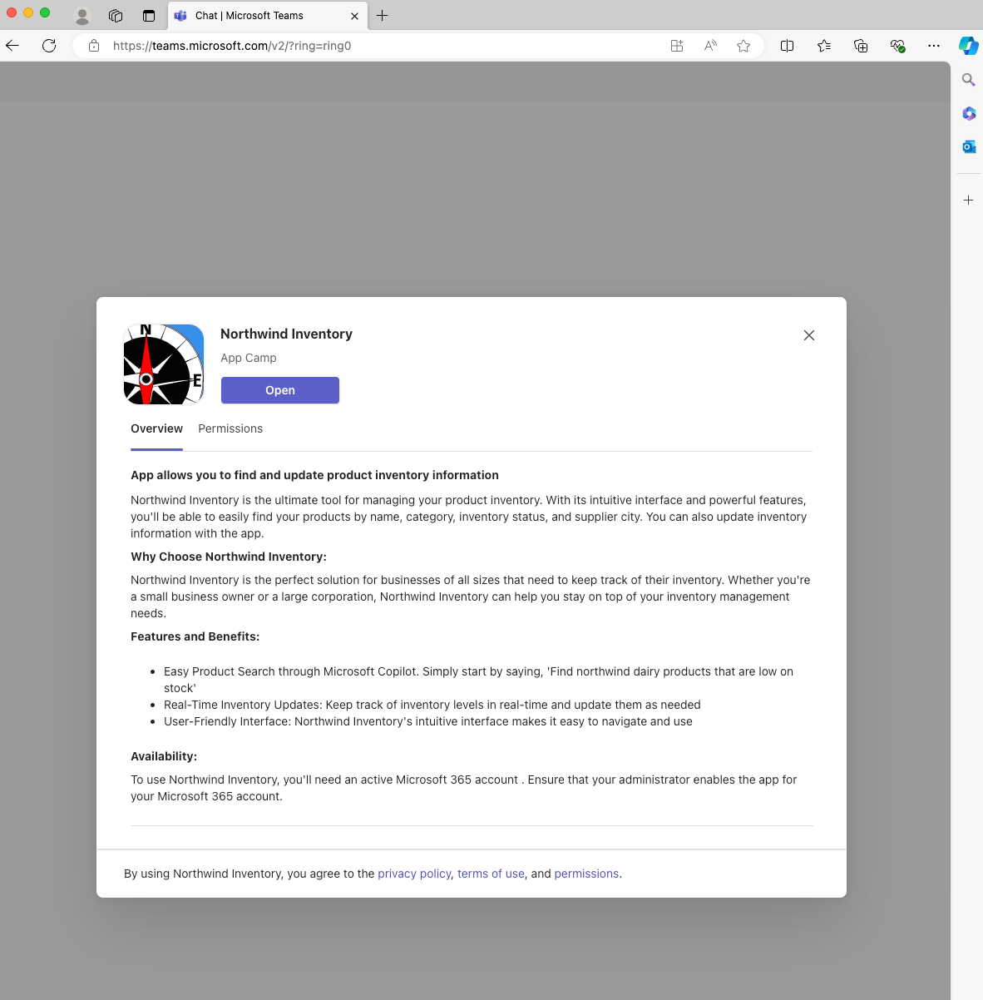
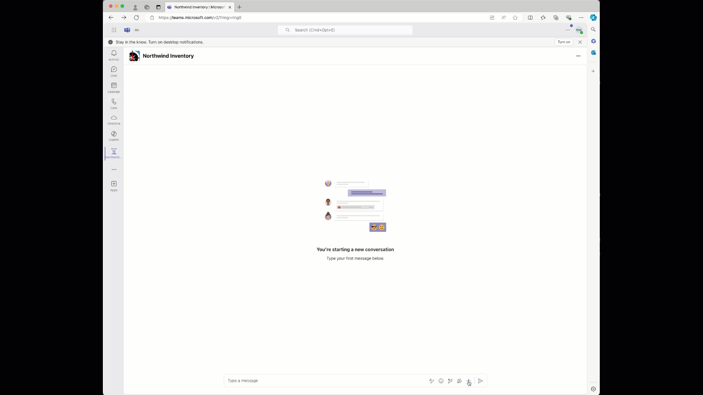
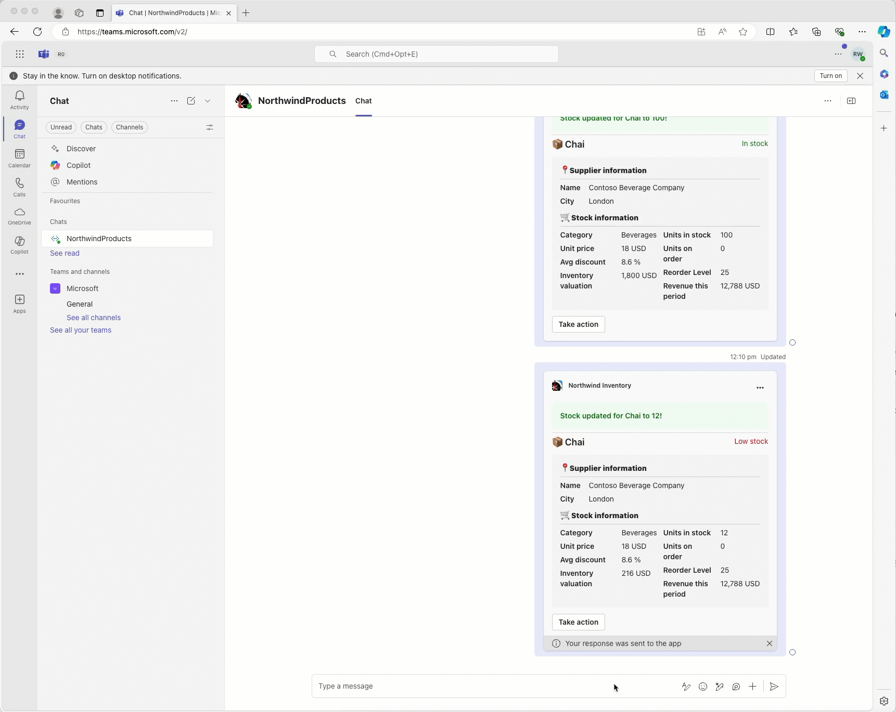

ラボ M1 - Northwind メッセージ拡張機能を理解する
このラボでは、ベース アプリである Northwind メッセージ拡張機能を実行します。最初の演習でソースコードに慣れ、最後に Teams でアプリケーションを実行します。
Extend Teams Message Extension ラボのナビゲーション (Extend Path)
このラボでは、次を行います。
- Northwind メッセージ拡張機能のクイック コード ツアー
- Teams でアプリケーションを実行
演習 1 - コード ツアー
ベース アプリである Northwind のコードを確認しましょう。
手順 1 - manifest を確認する
Microsoft 365 アプリケーションのコアはアプリケーション manifest です。ここに Microsoft 365 がアプリケーションへアクセスするための情報を提供します。
前のラボで作成した Northwind という作業ディレクトリ内の appPackage フォルダーにある manifest.json ファイルを開きます。この JSON ファイルはアイコン ファイルと共に ZIP アーカイブに配置され、アプリケーション パッケージを作成します。"icons" プロパティにはこれらアイコンへのパスが含まれています。
"icons": {
"color": "Northwind-Logo3-192-${{TEAMSFX_ENV}}.png",
"outline": "Northwind-Logo3-32.png"
},
アイコン名に含まれるトークン ${{TEAMSFX_ENV}} に注目してください。Agents Toolkit はこのトークンを環境名 (例: "local" や "dev" など) に置換します。そのため環境によってアイコンの色が変わります。
次に "name" と "description" を確認します。description がかなり長いことに気づくでしょう。これは、ユーザーと Copilot の両方がアプリケーションの機能と利用シーンを学習するために重要です。
"name": {
"short": "Northwind Inventory",
"full": "Northwind Inventory App"
},
"description": {
"short": "App allows you to find and update product inventory information",
"full": "Northwind Inventory is the ultimate tool for managing your product inventory. With its intuitive interface and powerful features, you'll be able to easily find your products by name, category, inventory status, and supplier city. You can also update inventory information with the app. \n\n **Why Choose Northwind Inventory:** \n\n Northwind Inventory is the perfect solution for businesses of all sizes that need to keep track of their inventory. Whether you're a small business owner or a large corporation, Northwind Inventory can help you stay on top of your inventory management needs. \n\n **Features and Benefits:** \n\n - Easy Product Search through Microsoft Copilot. Simply start by saying, 'Find northwind dairy products that are low on stock' \r - Real-Time Inventory Updates: Keep track of inventory levels in real-time and update them as needed \r - User-Friendly Interface: Northwind Inventory's intuitive interface makes it easy to navigate and use \n\n **Availability:** \n\n To use Northwind Inventory, you'll need an active Microsoft 365 account . Ensure that your administrator enables the app for your Microsoft 365 account."
},
少し下にスクロールすると "composeExtensions" があります。compose extension はメッセージ拡張機能の旧称で、ここにアプリのメッセージ拡張機能が定義されています。
この中にボットがあり、ID は Agents Toolkit が設定します。
"composeExtensions": [
{
"botId": "${{BOT_ID}}",
"commands": [
{
...
メッセージ拡張機能は Azure Bot Framework を使用して通信します。これにより Microsoft 365 とアプリケーション間で高速かつ安全な通信チャネルが確立されます。プロジェクトを初めて実行した際、Agents Toolkit はボットを登録し、そのボット ID をここに設定します。
このメッセージ拡張機能には 2 つのコマンドがあり、commands 配列で定義されています。1 つ選んで構造を確認しましょう。
{
"id": "discountSearch",
"context": [
"compose",
"commandBox"
],
"description": "Search for discounted products by category",
"title": "Discounts",
"type": "query",
"parameters": [
{
"name": "categoryName",
"title": "Category name",
"description": "Enter the category to find discounted products",
"inputType": "text"
}
]
},
これにより Northwind のカテゴリ内で割引商品を検索できます。このコマンドは "categoryName" という 1 つのパラメーターを受け取ります。
では最初のコマンド "inventorySearch" に戻りましょう。こちらは 5 つのパラメーターを持ち、より高度なクエリが可能です。
{
"id": "inventorySearch",
"context": [
"compose",
"commandBox"
],
"description": "Search products by name, category, inventory status, supplier location, stock level",
"title": "Product inventory",
"type": "query",
"parameters": [
...
]
},
手順 2 - 「Bot」コードを確認する
ルート フォルダーの src フォルダーにある searchApp.ts ファイルを開きます。このアプリケーションには Bot Builder SDK を使用して Azure Bot Framework と通信する "bot" コードが含まれています。
ボットは SDK クラス TeamsActivityHandler を拡張しています。
export class SearchApp extends TeamsActivityHandler {
constructor() {
super();
}
...
TeamsActivityHandler のメソッドをオーバーライドすることで、Microsoft 365 から送られるメッセージ (「アクティビティ」と呼ばれる) を処理できます。
最初は Messaging Extension Query アクティビティです (「messaging extension」も旧称)。ユーザーがメッセージ拡張機能で入力したり、Copilot が呼び出した際にこの関数が実行されます。
// Handle search message extension
public async handleTeamsMessagingExtensionQuery(
context: TurnContext,
query: MessagingExtensionQuery
): Promise<MessagingExtensionResponse> {
switch (query.commandId) {
case productSearchCommand.COMMAND_ID: {
return productSearchCommand.handleTeamsMessagingExtensionQuery(context, query);
}
case discountedSearchCommand.COMMAND_ID: {
return discountedSearchCommand.handleTeamsMessagingExtensionQuery(context, query);
}
}
}
ここでは command ID に基づいてクエリをディスパッチするだけです。これらは先ほど manifest で使用していた command ID と同じです。
もう 1 つアプリが処理する必要があるアクティビティはアダプティブ カードのアクションです。ユーザーがアダプティブ カード上で "Update stock" や "Reorder" をクリックしたときなどに発生します。アダプティブ カード アクション専用のメソッドはないため、より広範な onInvokeActivity() をオーバーライドし、アクティビティ名を手動でチェックして適切なハンドラーへディスパッチします。
import {
TeamsActivityHandler,
TurnContext,
MessagingExtensionQuery,
MessagingExtensionResponse,
InvokeResponse
} from "botbuilder";
...
export class SearchApp extends TeamsActivityHandler {
...
// Handle adaptive card actions
public async onInvokeActivity(context: TurnContext): Promise<InvokeResponse> {
...
手順 3 - メッセージ拡張機能コマンドのコードを確認する
コードをモジュール化し読みやすく再利用しやすくするため、各メッセージ拡張機能コマンドは独自の TypeScript モジュールに配置されています。例として src/messageExtensions/discountSearchCommand.ts を見てみましょう。
まず、モジュールは COMMAND_ID という定数をエクスポートしており、manifest にある command ID と一致します。これにより searchApp.ts の switch 文が正しく動作します。
次に、割引商品をカテゴリで検索する handleTeamsMessagingExtensionQuery() 関数を提供しています。
async function handleTeamsMessagingExtensionQuery(
context: TurnContext,
query: MessagingExtensionQuery
): Promise<MessagingExtensionResponse> {
// Seek the parameter by name, don't assume it's in element 0 of the array
let categoryName = cleanupParam(query.parameters.find((element) => element.name === "categoryName")?.value);
console.log(`💰 Discount query #${++queryCount}: Discounted products with categoryName=${categoryName}`);
const products = await getDiscountedProductsByCategory(categoryName);
console.log(`Found ${products.length} products in the Northwind database`)
const attachments = [];
products.forEach((product) => {
const preview = CardFactory.heroCard(product.ProductName,
`Avg discount ${product.AverageDiscount}%<br />Supplied by ${product.SupplierName} of ${product.SupplierCity}`,
[product.ImageUrl]);
const resultCard = cardHandler.getEditCard(product);
const attachment = { ...resultCard, preview };
attachments.push(attachment);
});
return {
composeExtension: {
type: "result",
attachmentLayout: "list",
attachments: attachments,
},
};
}
query.parameters 配列のインデックスが manifest 上のパラメーター位置と一致しない場合がある点に注意してください。コードはインデックスをハードコードせず、パラメーター名で値を取得します。
パラメーターを整形した後 (トリムし、Copilot が "*" をワイルドカードとみなす場合に対処) Northwind データ アクセス層の getDiscountedProductsByCategory() を呼び出します。
その後、各商品について 2 つのカードを生成します。
- プレビュー カード: "hero" カードで実装され、UI の検索結果や Copilot の引用に表示されます。
- 結果 カード: 詳細を含む "adaptive" カードで実装されます。
次の手順でアダプティブ カードのコードと Adaptive Card Designer を確認します。
手順 4 - アダプティブ カードと関連コードを確認する
プロジェクトのアダプティブ カードは src/adaptiveCards フォルダーにあります。3 つの JSON ファイルで実装されています。
- editCard.json - メッセージ拡張機能や Copilot 参照で最初に表示されるカード
- successCard.json - ユーザーがアクションを取った際に成功を示すカード
- errorCard.json - アクションが失敗した場合に表示するカード
edit カードを Adaptive Card Designer で確認しましょう。ブラウザーで https://adaptivecards.io を開き、上部の "Designer" をクリックします。

"text": "📦 ${productName}", のようなデータ バインディング式に注目してください。これはデータの productName プロパティをカード上のテキストにバインドします。
1️⃣ として "Microsoft Teams" をホスト アプリケーションに選択します。2️⃣ Card Payload Editor に editCard.json、3️⃣ Sample Data Editor に sampleData.json の内容を貼り付けます。sampleData はコードで使用される商品データと同一です。

カードがレンダリングされますが、Designer が一部フォーマットを表示できないため小さなエラーが出る場合があります。
ページ上部で Theme や Emulated Device を変更し、ダーク テーマやモバイル デバイスでの表示を確認してみてください。このツールがサンプル アプリケーションのアダプティブ カード作成に使用されました。
Visual Studio Code に戻り cardHandler.ts を開きます。getEditCard() 関数は各メッセージ拡張機能コマンドから呼び出され、結果カードを取得します。コードはアダプティブ カード JSON (テンプレート) を読み込んで商品データにバインドし、CardFactory でアダプティブ カード オブジェクトに変換します。
function getEditCard(product: ProductEx): any {
...
}
さらに下にはカード上の各アクション ボタンのハンドラーがあります。カードはボタンがクリックされたとき data.txtStock (数量入力ボックス) と data.productId (更新対象の商品 ID) を送信します。
async function handleTeamsCardActionUpdateStock(context: TurnContext) {
...
}
ご覧のように、コードはこれら 2 つの値を取得し、データベースを更新して新しいカードを返します。
演習 2 - メッセージ拡張機能としてサンプルを実行する
手順 1 - プロジェクトを初期設定する
Visual Studio Code で作業フォルダーを開きます。すでにコード ツアーで開いている場合はそのまま続行できます。
Agents Toolkit は環境変数を env フォルダーに保存し、初回起動時に自動で値を設定します。ただしサンプル アプリケーション固有の値が 1 つあり、それが Northwind データベースへの接続文字列です。
このプロジェクトでは Northwind データベースは Azure Table Storage に保存され、ローカル デバッグ時には Azurite エミュレーターを使用します。プロジェクトがビルドされるには接続文字列が必要です。
必要な設定は env/.env.local.user.sample に用意されています。このファイルを env フォルダーにコピーし、名前を .env.local.user に変更します。ここにシークレットや機密設定を置きます。
操作方法が不明な場合は次を参考にしてください。env フォルダーを展開し .env.local.user.sample を右クリックして "Copy"。次に env フォルダー内で右クリックし "Paste"。新しいファイル .env.local.user copy.sample が作成されます。右クリックして "Rename" を選び .env.local.user と入力すれば完了です。

作成された .env.local.user には次の 1 行が含まれているはずです。
SECRET_STORAGE_ACCOUNT_CONNECTION_STRING=UseDevelopmentStorage=true
(実際にはシークレットではありませんが、Azure にデプロイする場合はシークレットになり得ます)
手順 2 - アプリケーションをローカル実行
F5 キーを押すか 1️⃣ の開始ボタンをクリックしてデバッグを開始します。デバッグ プロファイルの選択を求められたら「Debug in Teams (Edge)」2️⃣ を選択するか、他のプロファイルを選びます。

次の画面が表示された場合は env/.env.local.user を修正してください。手順は前述のとおりです。

初回実行時、NodeJS がファイアウォールを通過する許可を求めることがあります。通信に必要なので許可してください。
npm パッケージの読み込みに少し時間がかかるかもしれません。最終的にブラウザーが開き、サインインを求められます。
デバッグではブラウザー内で Teams が開きます。Agents Toolkit にサインインしたのと同じ資格情報でログインしてください。 Teams が起動するとアプリを開くダイアログが表示されます。

開く場所を尋ねられます。既定では個人チャットですが、チャネルやグループ チャットも選択できます。 "Open" を選択します。

これでアプリとの個人チャットに入ります。
手順 3 - Microsoft Teams でテスト
Teams でアプリをテストするには、チャットのメッセージ入力欄にある "+" を選択します。"+ Get more apps" ボタンでアプリ検索ダイアログを開き、青い背景の "Northwind Inventory" アプリを選びます。手順は以下の GIF を参照してください。

アプリを開くとデフォルトの "Products Inventory" タブに検索ボックスが表示されます。"Discount" 検索タブはグレーアウトしています。 Northwind データベースに存在する製品 "Chai" と入力し、アイテムが表示されるか確認してください。
Chai のカードを選択して送信できます。
アダプティブ カードのボタン アクションも以下のようにテストできます。

これでメッセージ拡張機能が動作し、プラグインとして使用できる準備が整ったことが確認できます。次のラボで見ていきましょう。
注意: 実際に役立つのは他のユーザーとの会話で使う場合です。Northwind Inventory アプリとのチャットはテスト用です。
手順 4 - 高度なクエリ
Visual Studio Code に戻り appPackage ディレクトリの manifest.json を見てください。インストール時に表示されたアプリ情報がここにあります。
少し下にスクロールして composeExtensions: を探します。
compose extensions はメッセージ拡張機能の旧称で、Northwind Inventory メッセージ拡張機能がここに定義されています。
参照しやすいよう短縮版の JSON を示します。
"composeExtensions": [
{
"botId": "${{BOT_ID}}",
"commands": [
...
]
}
],
まずボット ID があることに注目してください。Microsoft Teams は Azure ボット チャネルを使ってアプリと安全かつリアルタイムにメッセージを交換します。Agents Toolkit がボットを登録し ID を自動設定します。
次にコマンドのコレクションがあります。これは Teams の検索ダイアログのタブに対応します。このアプリではコマンドは主に Copilot 向けです。
最初のコマンドは製品名で検索しました。次のコマンドも試してみましょう。
"Discounts" タブに "Beverages"、"Dairy"、"Produce" のいずれかを入力すると、そのカテゴリで割引されている商品が表示されます。Copilot はこれを使って割引商品に関する質問に回答します。

次に最初のコマンドを再度見てください。パラメーターが 5 つあります。
"parameters": [
...
]
残念ながら Teams は最初のパラメーターしか表示できませんが、Copilot は 5 つすべてを使用できます。これにより Northwind 在庫データへの高度なクエリが可能になります。
Teams UI の制限に対する回避策として、"Northwind Inventory" タブでは最大 5 つのパラメーターをカンマ区切りで入力できます。形式は次のとおりです。
name,category,inventoryStatus,supplierCity,supplierName
上記 JSON の description を参考にしながら入力してください。以下を試し、Visual Studio Code のデバッグ コンソールで各クエリが実行される様子を確認しましょう。
- "chai" - 名前が "chai" で始まる商品を検索
- "c,bev" - カテゴリが "bev" で始まり名前が "c" で始まる商品
- ",,out" - 在庫切れの商品
- ",,on,london" - London のサプライヤーで注文中の商品
- "tofu,produce,,osaka" - カテゴリ "produce"、サプライヤーが Osaka、名前が "tofu" で始まる商品
各クエリ語は商品リストを絞り込みます。クエリ語の形式は任意ですが、Copilot への説明を各パラメーターの description に明確に記載してください。
手順 6 (任意) - Azure Storage Explorer で Northwind データベースを表示
Northwind データベースは簡易的ですが実在します。データを確認または変更したい場合は、Azurite が実行中に Azure Storage Explorer を開きます。
Note
アプリを実行すると Azurite が自動的に起動します。詳細は Azurite のドキュメント を参照してください。プロジェクトが正常に起動していればストレージを閲覧できます。
Northwind データを閲覧するには "Emulator & Attached" → "Storage Accounts" → "Emulator - Default Ports" → "Tables" を開きます。昔ながらの Northwind テーブルが表示されます。NoSQL 環境では使いにくいですが存在しています。

コードは各クエリで Products テーブルを読み込みますが、ほかのテーブルはアプリ起動時のみアクセスします。そのため新しいカテゴリを追加した場合はアプリを再起動する必要があります。
まとめ
Northwind メッセージ拡張機能の実行をマスターしました。次のラボでは Microsoft 365 Copilot のプラグインとしてテストします。Next を選択してください。